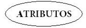

1. Modelo E-R (Entidad-Relación)

Antes de poder programar una base de datos, necesitamos diseñarla. Es decir, planificar qué información vamos a guardar, cómo se relaciona esa información y cómo se estructura.
Para eso usamos el modelo entidad-relación (E/R), una herramienta visual que nos permite representar gráficamente los elementos de una base de datos y las relaciones que hay entre ellos.
Este modelo es la base del diseño conceptual y nos ayuda a organizar las ideas antes de construir las tablas. Vamos a ver qué lo compone:
Para poder aprender cómo crear nuestro diagrama E/R, primero debemos conocer sus elementos y lo haremos utilizando el ejemplo del modelado de las tarjetas que ha ofrecido un banco a sus clientes:
De los clientes se conoce el código de cliente, el dni, el nombre, la fecha de nacimiento y la ciudad en la que vive. A su vez, también sabemos que cada cliente puede utilizar varias tarjetas de crédito, que son identificadas por el nombre de la tarjeta, el número, el código de seguridad y la fecha de vencimiento.
PASO 1: Entidades
MODELO

¿Qué es?¿Cómo se representa?
Una Entidad es un objeto que existe y es distinguible de otros objetos por su sola existencia y sobre él recogeremos información. Ejemplos de entidades son: cosa, persona, concepto abstracto o suceso (coches, casas, empleados, clientes, empresas, oficios, diseños de productos, conciertos, excursiones, etc.).
Tiene como características que:
- Un nombre de entidad sólo puede aparecer una vez en el esquema.
- Puede ser concreta, como una persona o un libro, o puede ser abstracta, como un día festivo o un concepto.
- Toda entidad tiene un identificador o clave: conjunto de uno o más atributos que permiten identificar de forma única una ocurrencia de una entidad dentro de un conjunto de ellas. Una entidad puede tener identificadores alternativos.
Las entidades se representan gráficamente mediante rectángulos y su nombre aparece en el interior de él: 
PASO 2: Atributos
MODELO
¿Qué es?¿Cómo se representa?
Una entidad está representada por un conjunto de atributos. Los atributos son datos que describen las propiedades de una entidad dada: cada una de las propiedades o características. El conjunto de valores permitidos un atributo se denomina dominio.
Ten cuidado con:
- No confundir otras entidades con un atributo. Por ejemplo: de la Entidad Vehículo se pueden establecer atributos como marca, modelo, color, chasis, placa, etc. Son características propias del vehículo y lo diferencian de otros. Pero el dueño del vehículo no puede ser un atributo del vehículo ya que no define al vehículo y este además tiene atributos propios que lo definen, como nombre, DNI, dirección, teléfono, edad, sexo, etc. Sería otra entidad.
- No confundir atributos iguales de entidades distintas. Por ejemplo: podemos tener una entidad Estudiante y otra entidad Profesor, que aparentemente tienen los mismos atributos como DNI, nombre, edad, teléfono, etc. Podemos malinterpretar esta situación y crear una entidad llamada persona para englobar a ambas entidades, pero esto no es conveniente; por lo que se debe ser muy específico al nombrar los atributos de las entidades para que hagan referencia a la entidad a la que pertenecen.
Los atributos se representan mediante una elipse o un círculo con su nombre:
PASO 3: Relaciones
MODELO
¿Qué es?¿Cómo se representa?
Una relación es una asociación o correspondencia existente entre entidades, básicamente para compartir información.
Por ejemplo, podemos definir una relación que asocia al cliente Juan López con la tarjeta 12345.
Característica importante de las relaciones es la cardinalidad de las entidades en cada extremo de la relación: La cardinalidad expresa cuántas del conjunto de entidades de un extremo de la relación están relacionadas con cuántas entidades del conjunto del otro extremo. Pueden ser “uno a uno”', “uno a varios”' o “varios a varios”'.
- Por ejemplo: un artículo puede ser escrito por un solo autor o por varios, pero nunca por ninguno y un autor puede escribir muchos artículos, o ninguno.
- En nuestro ejemplo: un cliente puede utilizar una, varias o ninguna tarjeta, pero una tarjeta siempre será utilizada por un solo cliente.
Una relación se representa mediante un rombo y la conexión mediante una línea: 
Conjunto de valores que puede tomar un atributo.